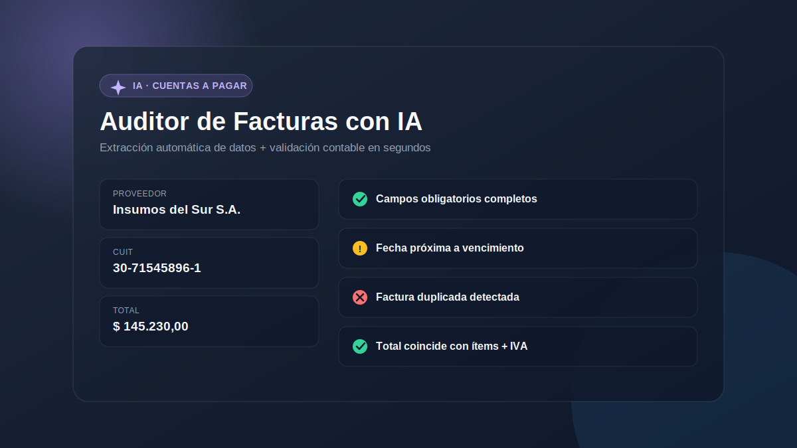

Volver al portfolio
✦ IA
Auditor de Facturas con IA
Un agente que automatiza uno de los procesos más repetitivos de cuentas a pagar: revisar que una factura esté bien cargada antes de que llegue al ERP. Pegás el texto de la factura (copiado de un PDF, un mail o una tabla) y la IA extrae los datos clave y corre validaciones contables en segundos.

Qué valida automáticamente
Los chequeos de campos obligatorios y coherencia del IVA los evalúa Claude a partir del texto de la factura. La detección de duplicados, el formato de CUIT y el cruce de totales contra la suma de ítems se corren directamente en el código, para que esas validaciones no dependan de la IA.
- Campos obligatorios: proveedor, CUIT, número de factura, fecha y total
- Formato de CUIT válido (11 dígitos)
- Fecha de emisión no futura
- Total coincide con la suma de ítems + IVA
- Detección de facturas duplicadas dentro de la misma sesión
Stack
Claude API
React 18
Babel Standalone
JavaScript